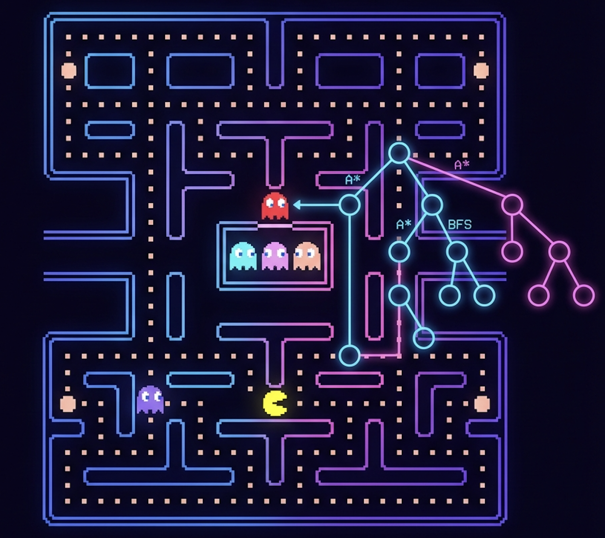

AI Search in Pacman
Informed and Uninformed Search Algorithms for Autonomous Navigation
- What I built: Intelligent agents capable of planning optimal paths through complex mazes.
- Why it matters: Demonstrates the foundational graph search algorithms used in planning and logistics.
- Proof: Agents solve "Eating All Dots" and "Corners" problems optimally and efficiently.
Problem / Goal
In this project, the goal was to create intelligent agents capable of navigating the Pacman world, not by simple reflexes, but by planning.
The core challenge involves formulating navigation and food collection as graph search problems. By abstracting the environment into states (positions, food grids) and actions (North, South, East, West), we can apply standard search algorithms to solve complex puzzles.
My Contribution
I implemented a suite of search algorithms and custom heuristics:
- Uninformed Search: Implemented DFS, BFS, and UCS to handle basic maze traversal and cost optimization.
- Informed Search (A*): Applied A* search with admissible heuristics to solve complex goals (like visiting all corners) efficiently.
- Heuristic Design: Developed custom heuristics (e.g., maze distance to farthest food) to guide the search in large state spaces.
Technical Approach
1. Uninformed Search
I started by implementing the foundational "uninformed" algorithms. These explore the state space without knowledge of the goal location.
- Depth First Search (DFS): Dive deep quickly. Good for finding a solution, but rarely optimal.
- Breadth First Search (BFS): Explore layer by layer. Guarantees the shortest path in unweighted graphs.
- Uniform Cost Search (UCS): Prioritize lowest cumulative cost. Essential when actions have different costs (e.g., stepping in mud).
2. A* Search & Heuristics
To solve NP-hard problems like the "Traveling Salesperson" equivalent of eating all food pellets, I used A* Search. $$ f(n) = g(n) + h(n) $$ Where $g(n)$ is the cost so far, and $h(n)$ is the estimated cost to the goal.
I designed the Food Search Heuristic based on the max maze distance to any remaining food pellet. This strictly underestimates the true cost (admissible) while being informative enough to prune the search space significantly.
Validation / Results
The agents were tested on various maze layouts:
- Big Maze: DFS found a path but it was long and winding. BFS found the optimal shortest path.
- Corners Problem: The A* agent with the custom corners heuristic expanded a fraction of the nodes compared to BFS, proving the efficiency of informed search.